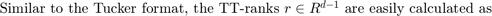
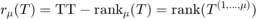
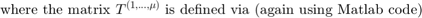
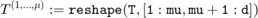
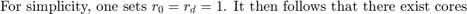
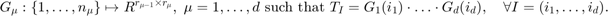
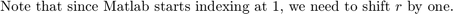

Tensor Train format
Written by Sebastian Kraemer, IGPM at RWTH Aachen University
The TT decomposition was first introduced to mathematics by I.V. Oseledets (2011)
The Tensor Train (short: TT) format may appear complicated, but in many aspects it is one of the most convenient formats.







Contents
- Numerical rank
- TT-SVD
- EXERCISE 1: entrywise evaluation
- Core product
- EXERCISE 2: About the core product:
- Left and right interface matrcies
- Left- and right-orthogonality
- EXERCISE 3: norm of a TT represented tensor
- SOLUTION 3
- EXERCISE 4: comparision of CP, Tucker and TT format
- EXERCISE* 5: compression within a TT representation
- SOLUTION 5
clear all % this clears all variables of their values
Numerical rank
Before we start, one should recall the trouble one can have with rank estimates. In the second line, the value 1e-16 might be the result of round-off errors or simply correct.
rank(diag([1,1e-15])) rank(diag([1,1e-16]))
ans =
2
ans =
1
TT-SVD
The following procedure constructs a TT-representation for any input tensor T. Since the input tensor may have low rank, we require a truncation tolerace tol , in order to avoid the trouble indicated above (this is exactly what the rank function does, but we are going to do this ourselves).
There is no need yet to fully understand this computation. In the next exercise, we only want to whether it is correct. For more insight, have a look at the worksheet Hierarchy in the game of modes.
tol = 1e-15; T1 = randn(4,3,4,2); n = size(T1) d = length(n) G = cell(1,d); r = zeros(1,d+1); r(1) = 1; r(d+1) = 1; % note the shift B = T1; for mu = 1:d [U,S,V] = svd(reshape(B,[n(mu)*r(mu),prod(n(mu+1:d))]),0); r(mu+1) = sum(diag(S) > tol); % count singular values larger than tol G{mu} = permute( reshape(U,[r(mu),n(mu),r(mu+1)]) , [1,3,2]); B = S*V'; end G{d} = G{d} * B; % B at this point is a scalar r
n =
4 3 4 2
d =
4
r =
1 4 8 2 1
size(G{2})
[r(2),r(3),n(2)]
G{2}(:,:,2) % this corresponds to G_2(2)
ans =
4 8 3
ans =
4 8 3
ans =
Columns 1 through 7
0.4977 -0.5162 -0.4711 -0.2105 0.2730 -0.2154 0.1392
0.1356 0.1168 0.3427 -0.4686 0.4964 0.0712 0.1101
0.3288 0.4035 0.1417 0.4246 0.1421 -0.0537 0.2511
0.0775 0.0458 -0.2844 0.1149 0.2089 -0.0636 -0.5222
Column 8
0.0692
-0.1661
-0.0084
0.0349
EXERCISE 1: entrywise evaluation
Complete the following function eval_TT_entry. As input, it expects a TT-representation G of a tensor T and an array I. The output is the value of the entry T_I. As before, it is more convenient to hand over n as parameter as well.
I = [1,2,3,2] T1(1,2,3,2) eval_TT_entry(G,I,n)
I =
1 2 3 2
ans =
-0.1771
ans =
ANSWER 1 MISSING
Core product
We can treat the cores as individual objects and multiply them:
function H = boxtimes(G1,G2)
[r1,k1,n1] = size(G1); [r2,k2,n2] = size(G2);
H = zeros(r1,k2,n1,n2); for i = 1:n1 for j = 1:n2 H(:,:,i,j) = G1(:,:,i) * G2(:,:,j); end end H = reshape(H,[r1,k2,n1*n2]);
end
H = boxtimes(G{2},G{3});
[r(2),r(4),n(2)*n(3)]
size(H)
ans =
4 2 12
ans =
4 2 12
H_unfold = reshape(H,[r(2),r(4),n(2),n(3)]);
H_unfold(:,:,2,3)
G{2}(:,:,2) * G{3}(:,:,3)
H(:,:,8)
ans =
0.3913 -0.1541
0.0861 0.1444
0.1071 0.0531
0.0457 -0.1305
ans =
0.3913 -0.1541
0.0861 0.1444
0.1071 0.0531
0.0457 -0.1305
ans =
0.3913 -0.1541
0.0861 0.1444
0.1071 0.0531
0.0457 -0.1305
We can also build the full tensor:
T1_test = boxtimes(boxtimes(boxtimes(G{1},G{2}),G{3}),G{4});
size(T1_test)
T1_test = reshape(T1_test,n);
T1_test(:,:,2,2)
T1(:,:,2,2)
ans =
1 1 96
ans =
-1.4398 0.2037 -2.2201
-0.4735 -0.7120 -1.9182
-0.1015 -0.2505 -1.0671
-0.4250 0.1907 0.0799
ans =
-1.4398 0.2037 -2.2201
-0.4735 -0.7120 -1.9182
-0.1015 -0.2505 -1.0671
-0.4250 0.1907 0.0799
EXERCISE 2: About the core product:
Explain the outputs above. Why is boxtimes defined this way?
Left and right interface matrcies
Another important aspect is a certain reshaping of matrices.
function R = right_fold(Gmu) [r1,r2,n] = size(Gmu); R = reshape(Gmu,[r1,r2*n]); end
function L = left_fold(Gmu) [r1,r2,n] = size(Gmu); L = reshape( permute(Gmu,[1,3,2]) ,[r1*n,r2]); end
Gmu = zeros(2,3,2); Gmu(:) = 1:2*3*2 left_fold(Gmu) right_fold(Gmu)
Gmu(:,:,1) =
1 3 5
2 4 6
Gmu(:,:,2) =
7 9 11
8 10 12
ans =
1 3 5
2 4 6
7 9 11
8 10 12
ans =
1 3 5 7 9 11
2 4 6 8 10 12
The inverse operations are as follows:
Gmu
Gmu(:,:,1) =
1 3 5
2 4 6
Gmu(:,:,2) =
7 9 11
8 10 12
right_unfold(right_fold(Gmu),2,3,2)
ans(:,:,1) =
1 3 5
2 4 6
ans(:,:,2) =
7 9 11
8 10 12
left_unfold(left_fold(Gmu),2,3,2)
ans(:,:,1) =
1 3 5
2 4 6
ans(:,:,2) =
7 9 11
8 10 12
Left- and right-orthogonality
Like in the Tucker format, orthogonality constraints play an important role. Since the TT format is ordered, one core is either left or right of another one, like when multiplying matrices. Analogously, cores can either be left- or right-orthogonal, which corresponds to column and row orthogonality. Due to the contruction above, G{1} to G{d-1} are left-orthogonal, but not G{d}.
round10 = @(x) round(x*1e10)/1e10;
L = left_fold(G{1});
round10(L'*L)
ans =
1 0 0 0
0 1 0 0
0 0 1 0
0 0 0 1
L = left_fold(G{2});
round10(L'*L)
ans =
1 0 0 0 0 0 0 0
0 1 0 0 0 0 0 0
0 0 1 0 0 0 0 0
0 0 0 1 0 0 0 0
0 0 0 0 1 0 0 0
0 0 0 0 0 1 0 0
0 0 0 0 0 0 1 0
0 0 0 0 0 0 0 1
L = left_fold(G{3});
round10(L'*L)
ans =
1 0
0 1
L = left_fold(G{4});
round10(L'*L)
ans = 105.1664
For the norm of the tensor then follows
norm(T1(:))
norm(G{4}(:))
ans = 10.2551 ans = 10.2551
Sometimes one wishes a specific distribution of orthogonality contraints:
G34 = boxtimes(G{3},G{4});
R = right_fold(G{4});
[Q,R] = qr(R',0); Q = Q'; R = R';
G{4} = right_unfold(Q,r(4),r(5),n(4));
G{3} = boxtimes(G{3},R);
G34_new = boxtimes(G{3},G{4});
round10(norm(G34(:)-G34_new(:))) % we have not changed the product of these cores
ans =
0
Hence now...
L = left_fold(G{3});
round10(L'*L)
ans =
68.0287 0
0 37.1377
R = right_fold(G{3});
round10(R*R')
ans =
Columns 1 through 7
36.8279 0 0 0 0 0 0
0 26.2603 0 0 0 0 0
0 0 14.4290 0 0 0 0
0 0 0 10.8288 0 0 0
0 0 0 0 6.7720 0 0
0 0 0 0 0 5.2500 0
0 0 0 0 0 0 3.2939
0 0 0 0 0 0 0
Column 8
0
0
0
0
0
0
0
1.5044
R = right_fold(G{4});
round10(R*R')
ans =
1 0
0 1
If we now want to know the norm of T1, we have to use G{3}
norm(G{3}(:))
norm(G{4}(:))
norm(T1(:)) % Frobenius norm
ans =
10.2551
ans =
1.4142
ans =
10.2551
EXERCISE 3: norm of a TT represented tensor
Given a randomly initialized representation, calculate the Frobenius norm of the tensor being represented, without constructing the full tensor.
To validate your result, you may then construct the full tensor.
d = 4 G = cell(1,d); n = randi([3,4],1,d) r = [1,randi([2,3],1,d-1),1] for mu = 1:d G{mu} = randn(r(mu),r(mu+1),n(mu)); end
d =
4
n =
4 4 3 4
r =
1 2 2 3 1
SOLUTION 3
'ANSWER 3 MISSING';
EXERCISE 4: comparision of CP, Tucker and TT format
Recall the properties of the CP and Tucker format and compare them to the TT format. What is a weakspot of TT, which both CP and Tucker do not have? What about tensors with very large dimension?
EXERCISE* 5: compression within a TT representation
Create a function in a separat Matlab file which applies the following procedure to a tensor, given by a TT-representation, but without constructing the full tensor:
function [T,r] = TT_truncate_full_tensor(T,tol)
n = size(T); d = length(n); r = ones(1,d+1);
for mu = 1:d-1 [U,S,V] = svd( reshape(T,[prod(n(1:mu)),prod(n(mu+1:d))]) ,0); r(mu+1) = sum(diag(S)>tol); % count number of entries larger than tol T = U(:,1:(mu+1)) * S(1:(mu+1),1:(mu+1)) * V(:,1:(mu+1))'; end
T = reshape(T,n);
end
d = randi([5,6],1) G = cell(1,d); n = randi([4,5],1,d) r = [1,randi([2,4],1,d-1),1]
d =
5
n =
4 5 4 4 5
r =
1 3 2 3 3 1
for mu = 1:d % random representation G{mu} = randn(r(mu),r(mu+1),n(mu)); G{mu} = boxtimes(G{mu},diag(5.^(-(1:r(mu+1))))); end T2 = 1; % construct full tensor for mu = 1:d T2 = boxtimes(T2,G{mu}); end T2 = reshape(T2,n);
[T2_trunc,r] = TT_truncate_full_tensor(T2,1e-4); T2_trunc(1:16) r
ans =
1.0e-04 *
Columns 1 through 7
0.2309 0.2724 -0.5113 0.2898 0.0449 0.0583 -0.1211
Columns 8 through 14
0.0761 0.1928 0.2248 -0.4165 0.2325 0.1972 0.2019
Columns 15 through 16
-0.3124 0.1344
r =
1 2 2 3 2 1
SOLUTION 5
'ANSWER 5 MISSING';